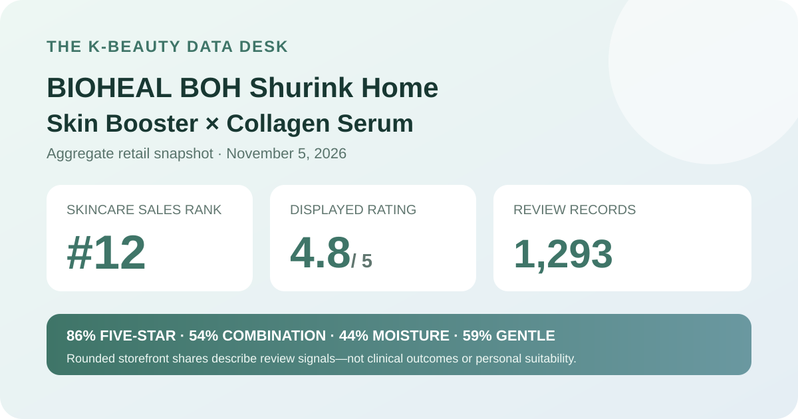
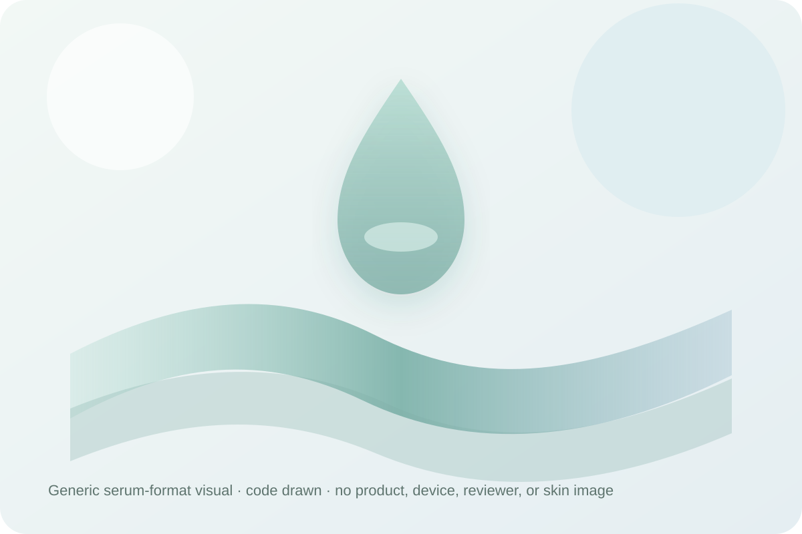

Data captured November 5, 2026. This analysis uses only the retailer's displayed product title, ranking position, aggregate rating, star distribution, shopper polls, and anonymous automated summary. It does not copy or translate individual review text, reviewer names, or photos, and it makes no claim of firsthand use.

The short version: BIOHEAL BOH Shurink Home Skin Booster × Collagen Serum appeared at number 12 in the captured skincare sales ranking. Its product header and detailed review view agreed on 4.8 out of 5 from 1,293 records. Five-star selections made up 86% of the displayed distribution; combination skin and moisture were the leading poll responses, while 59% selected the gentle response. These are retail signals, not proof of collagen change, lifting, pore change, hydration, tolerance, or device performance.
The displayed average was 4.8 stars. Olive Young showed 1,293 review records in the product header, and the official detailed review view repeated the same score and total. That agreement matters: it avoids combining a headline number from one page state with a detailed distribution from a different listing or refresh.
The detailed view displayed these rounded star shares:
The rounded rows total 100%. The useful descriptive point is that high ratings dominate this retailer pool: 86% was shown at five stars and another 11% at four stars. That is a strong satisfaction signal for the listing, but it does not reveal the conditions behind each rating or turn the aggregate into a controlled product test.
A four-digit record base is more informative than a handful of ratings, yet it still combines different purchase dates, package states, routines, climates, sensitivities, application amounts, and expectations. The average cannot prove which part of the listing people evaluated or whether a particular formula feature caused their score.
The skin-type panel displayed 54% combination, 39% dry, and 7% oily. Those rounded shares total 100%. Combination respondents formed the largest group, while dry respondents remained a substantial part of the panel and oily respondents were much less represented.
This is sample representation, not a fit score. The interface did not expose the poll denominator, whether every reviewer answered, how people classified themselves, or what else was in their routines. A 54% combination share does not establish that the serum is best for combination skin, and the smaller oily share does not justify a warning against oily skin.
The concern panel showed 44% moisture, 30% wrinkle or brightening, and 27% soothing. The rounded rows total 101%, which is consistent with independent whole-number rounding. Moisture was the largest label, but it is a shopper response rather than a hydration measurement.
No corneometer reading, transepidermal-water-loss result, standardized photography, wrinkle-depth measurement, pigment measurement, or comparator was captured. The wrinkle or brightening label does not establish either outcome, and the soothing label does not demonstrate reduced inflammation or treatment of redness.
The irritation panel displayed 59% gentle, 35% ordinary, and 6% felt irritation. A majority selected the favorable label, but more than one third chose ordinary and the felt-irritation row was not trivial. Reporting all three rows gives a more responsible picture than calling the listing universally gentle.
The source did not provide a patch-test protocol, dermatologist assessment, allergy screening, or severity and duration data. People with known allergies, active skin conditions, a damaged barrier, or a history of reactions should inspect the current regional ingredient list and seek appropriate professional guidance rather than rely on this aggregate.

The retailer classifies this item as a serum. That identifies a format category, but it does not verify color, scent, viscosity, slip, absorption speed, residue, finish, pilling, or compatibility with sunscreen and makeup. I did not open, dispense, apply, or pair the product with any device.
The local illustration above deliberately avoids depicting the actual serum or package. It provides only a generic visual cue for a fluid skincare format. Real sensory behavior depends on the formula, amount, underlying layers, application method, humidity, temperature, and the rest of the routine.
The retailer's automated recent-review summary displayed a 91% positive classification. It grouped anonymous discussion into broad themes around firmness or pore impressions, moisture and spreadability, and makeup adherence. Those labels are useful for seeing what topics recur, but they are not the same as measured outcomes.
No individual review sentence, identity, or image is reproduced or translated here. The automated summary does not disclose a full sampling method, denominator, or error analysis, and it can compress varied experiences into favorable labels. I therefore treat the themes as navigation signals, not evidence that the serum lifts skin, changes pores, increases hydration, or improves makeup in a controlled comparison.
The visible offer used “Shurink Home device” promotional wording and paired the serum with a mask extra. The aggregate interface did not separate serum-only use, device-paired use, historical package versions, or the current promotional configuration. It would be misleading to attribute the 4.8 average to a device protocol or to assume every reviewer used the same package.
This article does not evaluate hardware specifications, energy delivery, safety controls, maintenance, durability, or treatment technique. It also does not verify a device was included in every option represented by the review pool. Buyers should confirm exactly what is in the selected option and follow the current manufacturer instructions rather than infer a protocol from the listing name.
“Collagen serum,” “skin booster,” and the automated firmness theme are product-positioning language. The captured source did not provide ingredient concentration, collagen-source verification, penetration data, imaging, elasticity measurements, wrinkle-depth results, or a controlled lifting endpoint. A high rating cannot fill those gaps.
Likewise, the pore theme records an impression category rather than a pore count or measured diameter. Visible pores can vary with lighting, oil, hydration, makeup, camera settings, and temporary surface effects. The responsible reading stays with the aggregate labels and does not convert them into biological claims.
Rank 12 describes one moment in Olive Young Korea's skincare sales list. It is not a quality rank and does not mean the serum is objectively the twelfth-best skincare product. Promotion placement, price, stock, advertising, gifts, and recent demand can all affect the order.
The captured page displayed a ₩157,700 reference price and a ₩49,900 promotional price for the visible plan. Those numbers are dated anchors, not current buying advice. Confirm option contents, volume, extras, stock, formula, seller, coupon conditions, return terms, and final checkout total on the live page.
BIOHEAL BOH Shurink Home Skin Booster × Collagen Serum was the first valid unpublished product after eleven higher-ranked existing products or normalized product families were skipped. The listing passed the consistency check: ranking and detail titles agreed, and both review surfaces showed 4.8 stars from 1,293 records.
The displayed distribution is strongly positive, with 86% five-star and 11% four-star. Combination respondents led the skin-type poll at 54%; moisture led the concern poll at 44%; and 59% selected the gentle response. The lower rows matter too, particularly the 35% ordinary and 6% felt-irritation responses.
The responsible conclusion stops at those retailer signals. They support describing a well-rated serum listing with recurring anonymous themes around firmness impressions, moisture and spreadability, and makeup adherence. They do not prove collagen delivery, lifting, pore reduction, hydration, universal tolerance, or the effect of any device pairing.
Both captured review surfaces showed 4.8 out of 5 from 1,293 records, with 86% displayed at five stars.
Yes. The displayed poll showed 54% combination, 39% dry, and 7% oily. That is representation, not proof of best fit.
No. The panel showed 59% gentle, 35% ordinary, and 6% felt irritation.
No. It uses retailer-displayed aggregates only and makes no firsthand-use or device-performance claim.
Source: Olive Young Korea product page (captured November 5, 2026). The live listing, price, option contents, rating, and review totals may change after capture.
← Back to all reviews · Review-volume ranking · Skin-poll representation